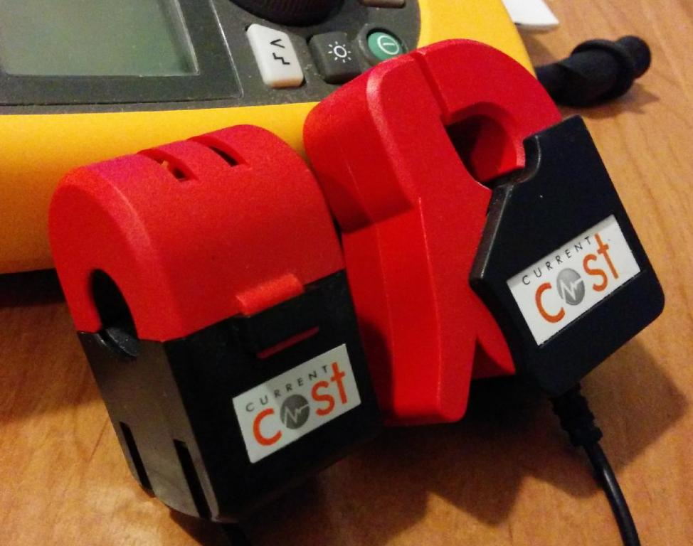
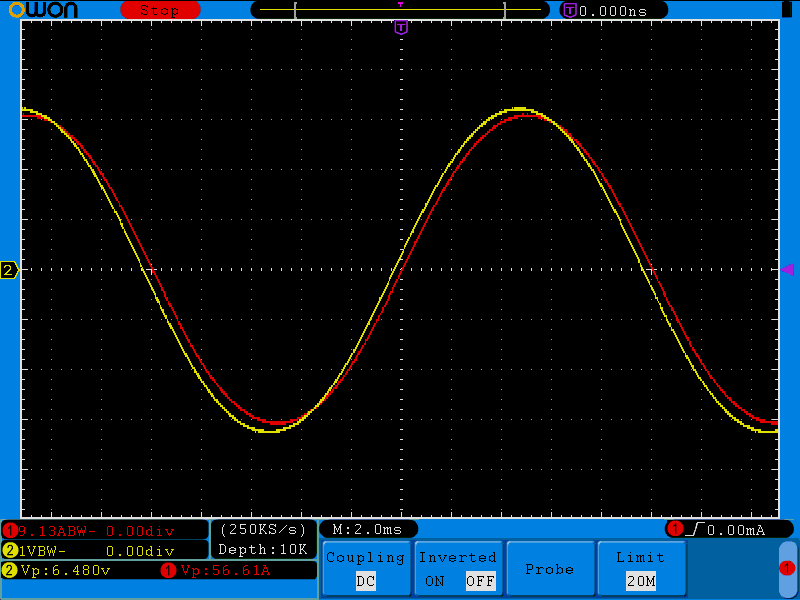
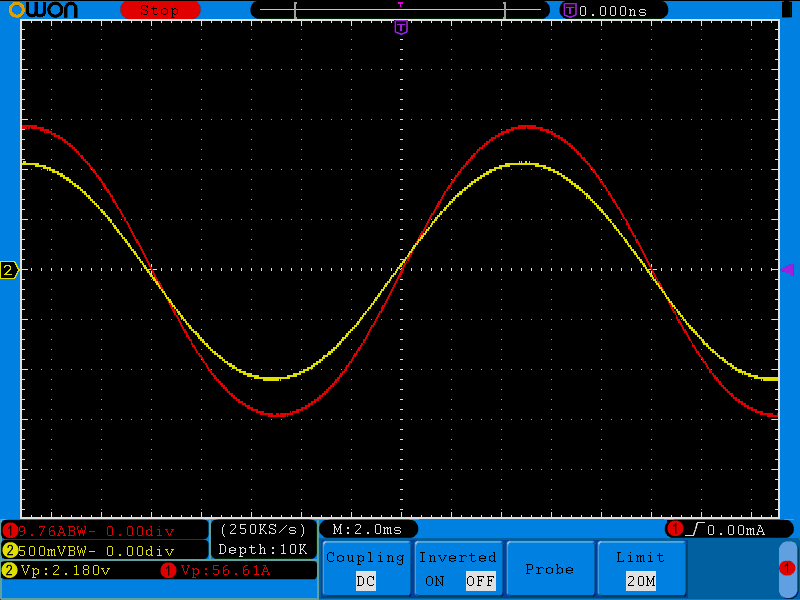
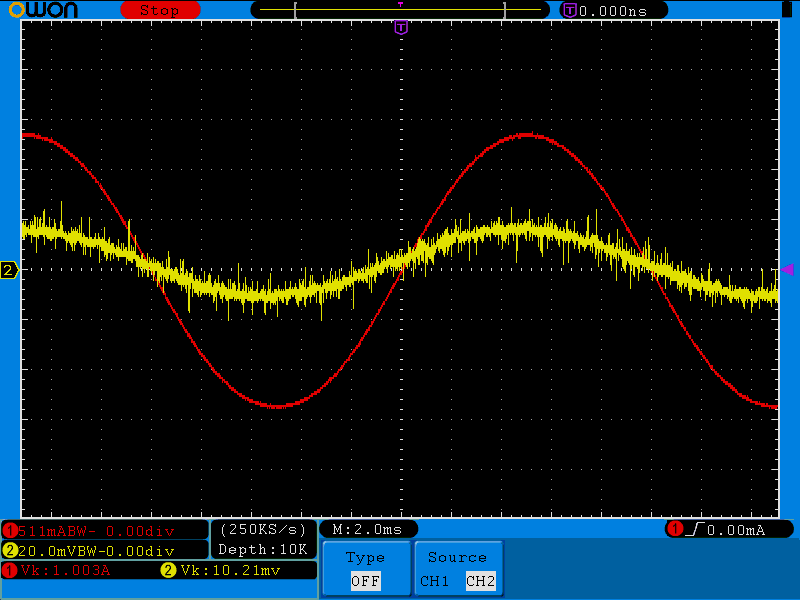

Dear OEM Community,
I wondered if anyone out there was using Current Transformers, or Optismart Pulse readers successfully with OEM hardware / software ?
Thanks
Stuart
Archived Forum |
|
Anyone Using CurrentCost CTs / Pulse modulesSubmitted by GadgetUK on Thu, 11/12/2014 - 16:13Dear OEM Community, I wondered if anyone out there was using Current Transformers, or Optismart Pulse readers successfully with OEM hardware / software ? Thanks Stuart
» |
Re: Anyone Using CurrentCost CTs / Pulse modules
Yes, I'm successfully using 2 CurrentCost CT's, have done so for past couple of years.
They seem to work fine.
Paul
Re: Anyone Using CurrentCost CTs / Pulse modules
Which models of CurrentCost CTs do you each have? The two times I've purchased CurrentCost gear it's come with different CTs that appear to behave completely differently. Do yours look like either of these?

Paul, I've not cracked either open, but
they each appearthe one on the right appears to have internal burden resistors. Were you able to characterise yours (or find any specs?) and tweak it to make it suitable for OEM gear? I've just done a quick test on the one on the right. With nothing connected to its outputs other than a high impedance voltmeter and scope, I slowly introduced some primary current and noticed a nice linear voltage output, so concluded it must have an internal burden, and started cranking up the primary current.The attached trace shows a calibrated ideal 20A primary current (red trace), and the yellow trace shows the output of the CT (no external burden). So with 20A primary, its output was swinging +/- 3.24V. I'm guessing you parallel'd that across a second burden resistor to bring that swing down? What value did you use for that?

At 20A, it looks like the CT introduces a lead of about 1/5th of 2 msecs, or 7.2°.
The signals I'm seeing out of the CT on the left have left me scratching my head, and warrant further investigation, but I'm assuming you both have the one on right, only because it's the only one I can find on CurrentCost's webpage.
Re: Anyone Using CurrentCost CTs / Pulse modules
"The signals I'm seeing out of the CT on the left have left me scratching my head"
What are they like? This?
Re: Anyone Using CurrentCost CTs / Pulse modules
I'm using the one on the left, after picking up a pair from Ebay.
Robert Wall ran some tests on that CT version about 18 months or so ago, which I found reassuring and helpful.
Robert, are you happy to share that report? (I've not got access to my laptop at the moment - using phone)
Paul
Re: Anyone Using CurrentCost CTs / Pulse modules
You've got a better memory than I have! - I'd completely forgotten that.
Yes, publish it by all means.Re: Anyone Using CurrentCost CTs / Pulse modules
Yeh, I take back what I said about them each having an internal burden resistor. The one on the left looks much better when you give it a resistor to bang against. GadgetUK if you have the one on the left, then Robert's report above gives you great advice on choosing an appropriate burden. If you have the one on the right, here's some data to get you started:
If you do the maths based on the first two rows, it appears to have an turns ration of 3185:1 and an internal burden of 365R. I've attached a few traces with the 33R external. The signal looks good up to 80A, I haven't tested any higher than that. Down at the low end (1A) the phase error is starting to look a bit grim. It's hard to pick amongst all the noise, but I'm guessing about a 1msec lead, which is 18°.
[EDIT] It looks like I've got a fairly big DC offset in that noisy yellow trace, which is making the phase error look a lot worse than it is.

80A primary current, 33R external burden.

1A primary current, 33R external burden.
Re: Anyone Using CurrentCost CTs / Pulse modules
Thanks for the feedback folks.
I do have the CT's shown on the left, so looks like it should be fairly simple to make some quick progress.
As they say, watch this space.